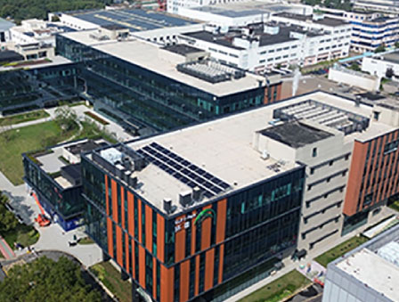
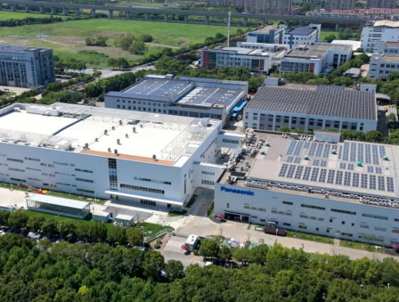
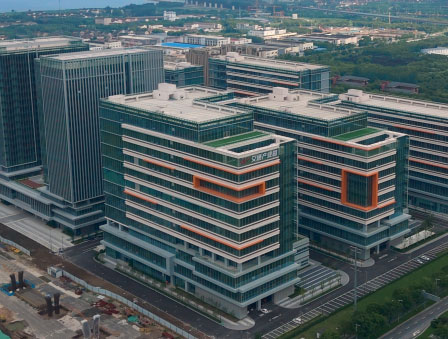
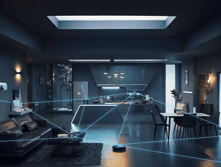

智能控制系统：智慧照明的 “大脑与神经”
感知层技术：实时采集环境与用户需求数据，是调控的基础。
a. 光照传感器：检测自然光强度，自动调节人工照明亮度（如白天降低灯光功率，傍晚提升）；
b. 人体红外传感器（PIR）/ 微波雷达传感器：检测区域内是否有人活动，实现
“人来灯亮、人走灯灭”（适用于走廊、卫生间、地下车库等场景）；
c. occupancy 传感器（存在传感器）：更精准识别人体存在状态（如静止办公），避免误判导致的灯光熄灭；
d. 温湿度、空气质量传感器：联动其他系统（如空调），实现照明与环境控制的协同节能。
通信层技术：实现感知数据与控制指令的传输，保障系统联网能力。
a. 短距离通信：ZigBee（低功耗、多节点，适合室内照明组网）、WiFi（高速，适合家庭 / 小面积场景）、蓝牙
Mesh（灵活扩展，支持手机直连）；
b. 中长距离通信：LoRa（低功耗、广覆盖，适合路灯、园区等户外场景）、NB-IoT（运营商网络，适合大规模智慧城市照明）；
c. 工业级协议：DALI-2（数字可寻址照明接口，支持单灯精准控制与故障诊断）、0-10V
模拟调光（传统但稳定，适合简单场景）。
控制层技术：基于数据实现智能决策，是系统的 “大脑”。
a. 本地控制器（PLC）：实现单区域 / 单栋建筑的本地化控制，降低对云端依赖（如办公楼每层的照明控制器）；
b.
云端平台：通过物联网（IoT）汇聚多区域照明数据，支持远程监控、策略配置与能耗分析（如城市路灯管理平台，可实时查看每盏路灯的功率、故障状态）；
c. AI
算法优化：基于历史数据（如人流规律、光照变化）自学习，预测照明需求（如写字楼上班高峰自动提升公共区域亮度，深夜仅保留应急照明；校园路灯根据下课时间调整亮灯时段）。
高效节能光源：节能照明的 “核心载体”
光源是能源消耗的直接主体，高效光源能从源头降低能耗，目前主流技术已从传统光源（白炽灯、荧光灯）全面转向半导体光源。
光效越高，意味着消耗 1 瓦电能可产生更多光通量（亮度），节能性越强。
此外，光源的 “低碳性” 还体现在材料上：LED
不含汞、铅等有毒物质，废弃后对环境污染远低于荧光灯；部分企业已采用可回收铝材、生物基塑料等环保材料制作灯具外壳，进一步降低全生命周期碳排放。
低碳支撑技术：实现 “全链条减碳”
除了 “节能”，“低碳” 还需覆盖能源供给、系统联动与回收利用，确保照明系统从 “用能” 到 “报废” 的全流程低碳。
可再生能源耦合技术
将照明系统与太阳能、风能等清洁能源结合，减少对化石能源的依赖。
a. 太阳能路灯：灯杆顶部集成光伏板，白天充电、夜间供电，无需电网接入（适用于偏远地区、公园）；
b. 建筑光伏一体化（BIPV）：将光伏组件与建筑照明结合（如光伏玻璃幕墙为室内 LED 照明供电）。
储能与微电网协同
通过储能设备（如锂电池）存储过剩电能，在电网高峰时为照明供电，降低电网负荷与碳排放。例如：工业园区照明系统接入微电网，优先使用光伏发电，电网断电时通过储能保障应急照明。
全生命周期回收技术
针对 LED 灯具的驱动电源、芯片等部件，建立拆解、回收与再利用体系。例如：企业回收废弃 LED
灯具，提取金属材料（如铜、铝），修复驱动电源后重新组装，减少电子垃圾污染与原材料开采。
相比传统 “固定开关、恒定亮度” 的照明模式，智慧节能照明低碳技术具有四大核心特征。
按需调控
基于环境与用户需求动态调整，避免 “无效照明”（如地下车库无人时仅亮 10% 亮度，有人时提升至 80%）。
能源优化
不仅 “节能”，更通过清洁能源、储能等实现 “低碳用能”，而非单纯降低能耗。
数据驱动
通过云端平台实时监测能耗数据，生成节能报告（如某办公楼每月通过智能调控节省 1.2 万度电，减少碳排放约 9.6
吨），为后续优化提供依据。
多系统协同
与建筑暖通（空调）、安防（监控）、智慧城市（交通信号）等系统联动，实现
“整体节能”（如商场照明与空调联动，下班后天黑自动关闭照明与非必要空调）。
相比传统 “固定开关、恒定亮度” 的照明模式，智慧节能照明低碳技术具有四大核心特征。
按需调控
基于环境与用户需求动态调整，避免 “无效照明”（如地下车库无人时仅亮 10% 亮度，有人时提升至 80%）。
能源优化
不仅 “节能”，更通过清洁能源、储能等实现 “低碳用能”，而非单纯降低能耗。
数据驱动
通过云端平台实时监测能耗数据，生成节能报告（如某办公楼每月通过智能调控节省 1.2 万度电，减少碳排放约 9.6
吨），为后续优化提供依据。
多系统协同
与建筑暖通（空调）、安防（监控）、智慧城市（交通信号）等系统联动，实现
“整体节能”（如商场照明与空调联动，下班后天黑自动关闭照明与非必要空调）。
智慧节能照明低碳技术的应用已覆盖民用、工业、市政等多个领域，不同场景的技术落地重点有所差异：

公共建筑（办公楼、医院、学校）
a. 核心需求：满足不同区域的照明标准（如办公室需 300-500lux，走廊需
100lux），同时降低能耗。

工业场景（工厂车间、仓库）
b. 技术应用：采用 DALI-2 协议实现单灯控制，结合光照传感器与人体传感器，办公区白天利用自然光，无人时自动关灯；医院手术室采用高显色性
LED（显色指数 Ra>95），并与手术设备联动，确保手术照明稳定。

智慧城市（路灯、隧道、广场）
a. 核心需求：满足不同区域的照明标准（如办公室需 300-500lux，走廊需 100lux），同时降低能耗。满足不同区域的照明标准（如办公室需
300-500lux，走廊需 100lux），同时降低能耗。满足不同区域的照明标准（如办公室需 300-500lux，走廊需
100lux），同时降低能耗。

智能家居
a. 核心需求：满足不同区域的照明标准（如办公室需 300-500lux，走廊需 100lux），同时降低能耗。满足不同区域的照明标准（如办公室需
300-500lux，走廊需 100lux），同时降低能耗。满足不同区域的照明标准（如办公室需 300-500lux，走廊需
100lux），同时降低能耗。
公共建筑（办公楼、医院、学校）
智慧节能照明低碳技术的应用已覆盖民用、工业、市政等多个领域，不同场景的技术落地重点有所差异：
a. 核心需求：适应复杂工况（如高温、高粉尘），保障生产安全，同时避免车间大面积长明灯。
b. 人体红外传感器（PIR）/ 微波雷达传感器：检测区域内是否有人活动，实现
“人来灯亮、人走灯灭”（适用于走廊、卫生间、地下车库等场景）；
c. occupancy 传感器（存在传感器）：更精准识别人体存在状态（如静止办公），避免误判导致的灯光熄灭；